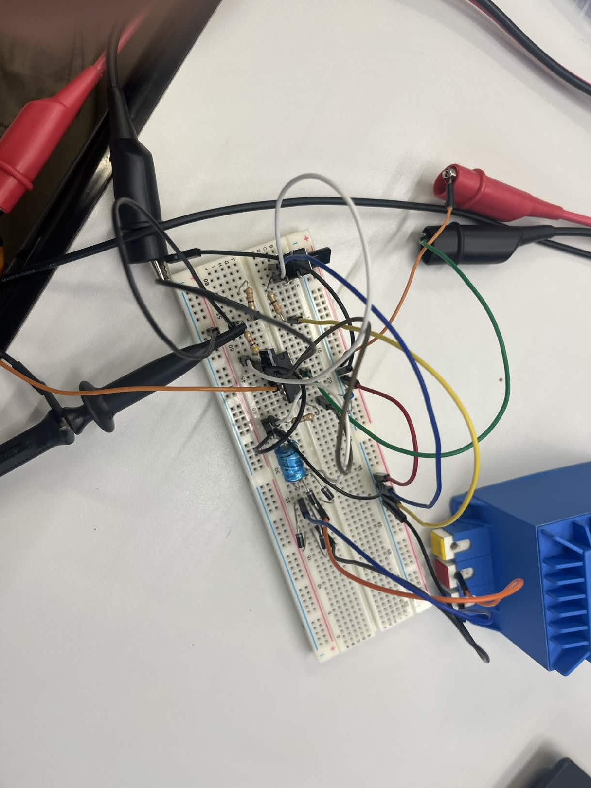

Project 5 — DC naar AC Converter
Een DC naar AC converter gebouwd met een brugschakeling van diodes.
Beschrijving
Dit project is een DC naar AC converter gebouwd met een brugschakeling van diodes, ook wel een Wheatstone brug genoemd. Deze schakeling zet gelijkstroom om naar wisselstroom. Een condensator zorgt voor het gladstrijken van het signaal.
Componenten
- Diodes (x4)
- Condensator
- Weerstanden
- Breadboard
- Voeding